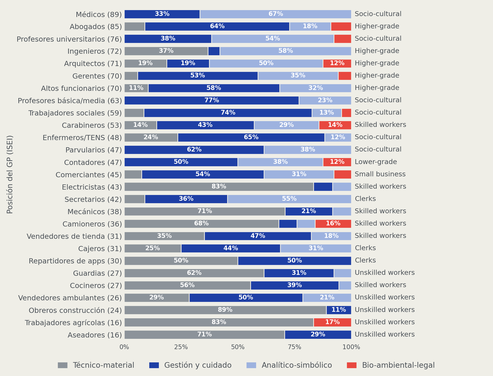
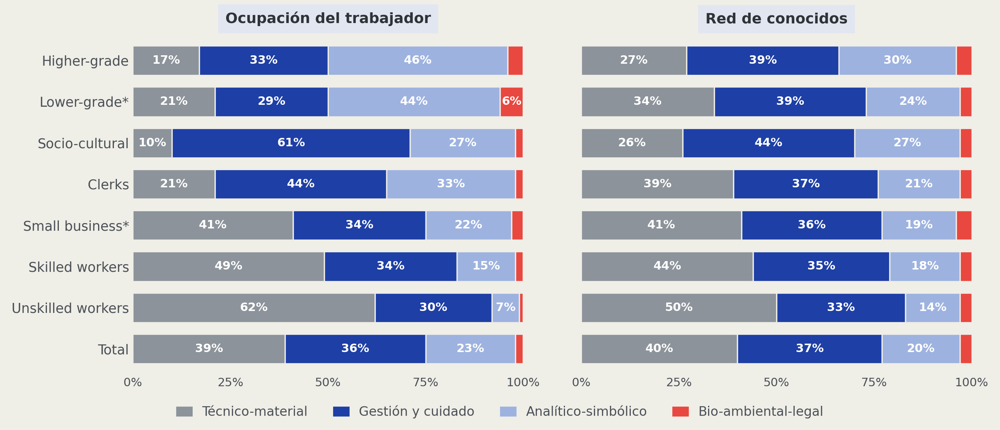
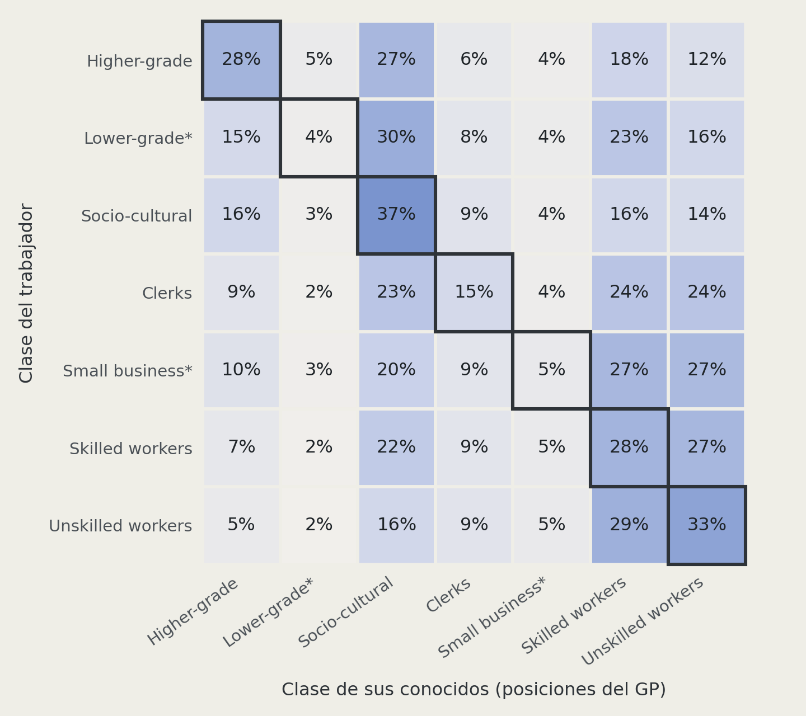
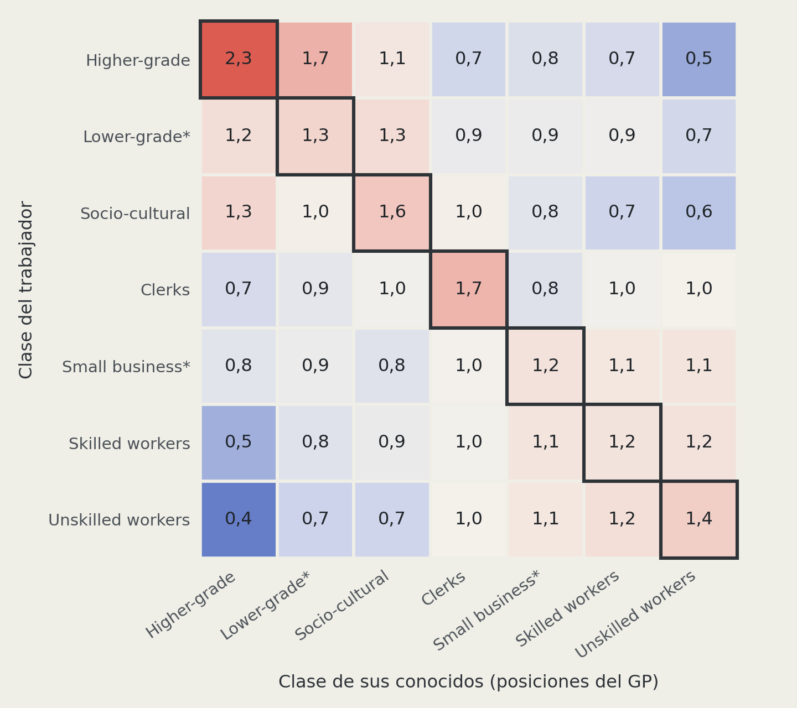
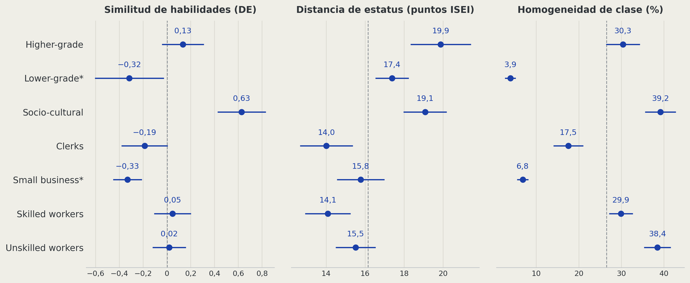
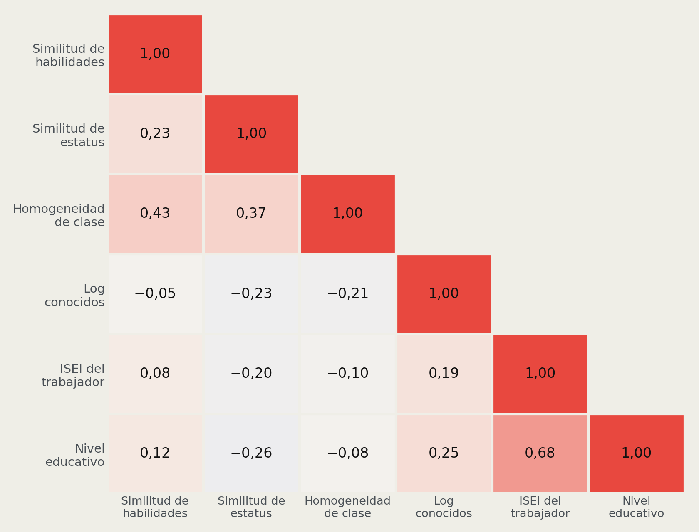
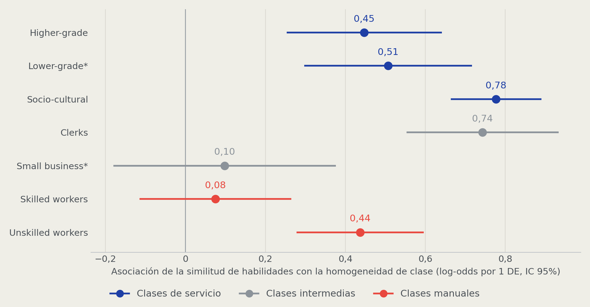

Cierre social en redes personales: clase, estatus y habilidades en la Región Metropolitana
Trajan Pirkovic Palma¹ ²
¹ Instituto de Sociología, Pontificia Universidad Católica de Chile
² Fondecyt: Class, personal networks and political attitudes
Profesora Guía: Andrea Canales Hernández
Profesor Co-Tutor: Gabriel Otero Cabrol
Presentación de avances de tesis · 7 de octubre de 2026
Idea central
Las redes personales en Chile están segmentadas por clase: son un espacio de cierre social que ayuda a reproducir la desigualdad.
Sabemos que ese cierre sigue la clase, el estatus y la educación; no sabemos si también sigue lo que las personas saben hacer en su trabajo
Mido la similitud de habilidades laborales entre 971 trabajadores de la Región Metropolitana y sus conocidos, con el perfil ESCO de 27 ocupaciones
Pregunto si las habilidades son una dimensión del cierre social: si su similitud se asocia con redes más homogéneas en clase, y si esa asociación varía según la clase del trabajador y la similitud de estatus de su red
Primer resultado: redes más parecidas en habilidades son más homogéneas en clase, más allá de características socioeconómicas.
De La Pintana a Costanera
Problema de investigación
Desigualdad que se reproduce
La desigualdad en Chile no es solo de ingresos: también es relacional.
Chile es muy desigual: Gini de 0,47 en el ingreso monetario de los hogares (Ministerio de Desarrollo Social y Familia, 2023; Flores et al., 2020; Torche, 2014)
Las redes personales están segmentadas por clase: hay contacto entre clases, pero con fronteras marcadas (Otero et al., 2021, 2026; Lindh et al., 2021; PNUD, 2017)
Las redes traspasan recursos y oportunidades: información, empleo, recomendaciones (Lin, 2001; DiMaggio y Garip, 2012; Contreras et al., 2019)
Si las redes están segmentadas, ayudan a reproducir la desigualdad
Objetivo de fondo: entender los mecanismos por los que la desigualdad se reproduce.
Fronteras: vertical y horizontal
La literatura mira las fronteras de las redes sobre todo en vertical.
Lo estudiado: vertical
Clase, estatus ocupacional (ISEI) o educación
Segregación entre quienes están arriba y abajo (Otero et al., 2021; Espinosa-Rada et al., 2026; Alecu et al., 2022)
Lo que falta: horizontal
Las habilidades son activos (Wright, 2005)
Hay lógicas de trabajo técnicas, organizacionales e interpersonales (Oesch, 2006)
Hay lógicas verticales, pero también horizontales.
¿Las fronteras de las redes se forman también por el tipo de trabajo?
¿Por qué habilidades laborales?
Las habilidades laborales permiten ver fronteras que el estatus y la clase no distinguen.
Son un recurso, no solo un rasgo: dan acceso a posiciones y recompensas (Wright, 2005; Oesch, 2006)
Organizan los encuentros: el trabajo reúne a quienes hacen cosas parecidas en los mismos lugares y oficios (Feld, 1981; Weeden y Grusky, 2005)
Pueden ser base de acaparamiento: saberes, credenciales y licencias restringen el acceso a ocupaciones (Parkin, 1979; Tilly, 1998; Weeden, 2002)
Se pueden medir ocupación por ocupación: forman comunidades de trabajo con estructura propia (Alabdulkareem et al., 2018; Comisión Europea, s. f.)
A la misma altura, trabajos distintos: electricistas (ISEI 43) trabajan con cosas; secretarios (42), con información.
Propósito
Examinar si la similitud de habilidades laborales es una dimensión del cierre social en las redes personales, distinta del estatus socioeconómico ocupacional y de las credenciales educativas.
Aportes esperados
Incorporar una medida de habilidades (ESCO) al estudio de redes y clase
Distinguir lo que produce la estructura ocupacional de lo que es relación
Distinguir tipos de frontera: horizontal y vertical
Pregunta de investigación
¿Cómo interactúan el nivel socioeconómico de los trabajadores y su similitud de habilidades laborales y de estatus con la homogeneidad de clase de sus redes personales, en la Región Metropolitana en 2025?
Objetivos e hipótesis
Objetivos
| Objetivo específico | |
|---|---|
| OE1 | Describir la similitud de habilidades laborales y de estatus entre los trabajadores de la Región Metropolitana y sus conocidos en 2025 |
| OE2 | Estimar la asociación entre la similitud de habilidades laborales con sus conocidos y la homogeneidad de clase de las redes de los trabajadores de la Región Metropolitana en 2025, más allá de sus características socioeconómicas |
| OE3 | Examinar la variación de esa asociación según la clase de los trabajadores y su similitud de estatus con sus conocidos |
Hipótesis OE2: asociación
OE2 · trabajadores de la Región Metropolitana
H1. A mayor similitud de habilidades laborales con sus conocidos, mayor homogeneidad de clase de sus redes, más allá de características socioeconómicas (Wright, 2005; Oesch, 2006; Weeden y Grusky, 2005)
En simple: quienes tienen conocidos parecidos a ellos en lo que saben hacer tienen redes más concentradas en su propia clase, comparando personas de igual clase, nivel educativo, ingreso, sexo y edad.
Hipótesis OE3: variación
OE3 · trabajadores de la Región Metropolitana
H2. La asociación entre la similitud de habilidades laborales y la homogeneidad de clase es mayor en las clases manuales que en las clases de servicio (Parkin, 1979; Weeden, 2002; Weeden y Grusky, 2005)
En simple: donde no hay credenciales que cierren el acceso, el oficio compartido sería la base principal de la frontera de clase.
H3. La asociación entre la similitud de habilidades laborales y la homogeneidad de clase es mayor cuanto mayor es la similitud de estatus con sus conocidos (Blau, 1977)
En simple: la frontera sería más fuerte cuando los conocidos se parecen al trabajador en lo que saben hacer y, además, en estatus; las fronteras se refuerzan cuando coinciden.
Datos y métodos
Datos
Encuesta Class, Personal Networks and Political Attitudes (Fondecyt), Región Metropolitana, 2025.
Generador de posiciones: “¿cuántas personas que usted conoce son…?”, en 27 ocupaciones (Lin y Dumin, 1986)
971 trabajadores y 30.207 menciones a conocidos
Clase de Oesch en siete clases (Oesch, 2006) · ponderador muestral
Variable dependiente
OE2 y OE3
Homogeneidad de clase de la red
Proporción de conocidos que están en la propia clase del trabajador (Oesch, siete clases)
De 0 a 1 · 971 trabajadores
\[\text{Homogeneidad}_i = \frac{\sum_p n_{ip}\, \mathbb{1}[\text{clase}_i = \text{clase}_p]}{\sum_p n_{ip}}\]
Pedro conoce a 10 personas y 8 son de su clase: homogeneidad de 0,8.
Variables independientes
Central
Similitud de habilidades laborales de la red
Cuán cerca están, en la red de habilidades ESCO, las ocupaciones de los conocidos de la del trabajador. Promedio ponderado por número de conocidos, en DE
Moderadora en H2 · control
Clase del trabajador
Esquema de Oesch, siete clases
Moderadora en H3
Similitud de estatus de la red
Cuán cerca están en la escala ISEI-08 (Ganzeboom et al., 1992): promedio ponderado de \(-\lvert ISEI_i - ISEI_p \rvert\), en DE
Controles
Nivel educativo, ingreso, sexo y edad
Las medidas de red son promedios ponderados por número de conocidos: la unidad es el trabajador.
De ocupaciones a habilidades
1 · Ocupación
Código ISCO-08 (OIT, 2012)
2 · Perfil
Habilidades esenciales en ESCO (Comisión Europea, s. f.)
3 · Red
112 categorías unidas si aparecen juntas (Alabdulkareem et al., 2018)
4 · Comunidades
Cuatro, con Leiden (Traag et al., 2019)
| Comunidad | Trabajo con | Ejemplo |
|---|---|---|
| Técnico-material | Cosas y entorno físico | Electricistas, 83% |
| Gestión y cuidado | Personas: coordinar y atender | Profesores de básica y media, 77% |
| Analítico-simbólico | Símbolos e información | Ingenieros, 58% |
| Bio-ambiental-legal | Seres vivos, ambiente y derecho | Aparece de ISEI 16 a 85 |
Tres medidas, cuatro personas
| Persona | Conoce a | Similitud de habilidades | Similitud de estatus | Homogeneidad de clase |
|---|---|---|---|---|
| Pedro, electricista (Skilled workers, ISEI 43) | Mecánicos, camioneros, cocineros | ●●● alta | ●●● alta | 100% |
| Rosa, obrera de construcción (Unskilled workers, ISEI 24) | Electricistas, mecánicos | ●●● alta | ●●○ media | 0% |
| Carla, abogada (Higher-grade, ISEI 85) | Médicos, profesores universitarios | ●○○ baja | ●●● alta | 0% |
| Sofía, ingeniera (Higher-grade, ISEI 72) | Gerentes, altos funcionarios | ●○○ baja | ●●● alta | 100% |
Las tres pueden ir juntas (Pedro) o separarse (Rosa, Carla, Sofía).
Hipótesis y modelos
Cada hipótesis tiene un modelo: una variable dependiente, una variable independiente y controles. OE1, descriptivo, usa dos regresiones cruzadas.
| Tipo de regresión | Variable dependiente | Variable independiente | Controles | |
|---|---|---|---|---|
| OE1 | Lineal | Similitud de habilidades de la red | Similitud de estatus de la red | Base |
| OE1 | Lineal | Similitud de estatus de la red | Similitud de habilidades de la red | Base |
| H1 | Logística fraccional | Homogeneidad de clase de la red | Similitud de habilidades de la red | Base |
| H2 | Logística fraccional, con interacción | Homogeneidad de clase de la red | Similitud de habilidades de la red × clase | Base |
| H3 | Logística fraccional, con interacción | Homogeneidad de clase de la red | Similitud de habilidades de la red × similitud de estatus de la red | Base |
Base: clase, nivel educativo, ingreso, sexo y edad. Todas ponderadas, N = 971.
Logística fraccional: como una logística, pero para una proporción entre 0 y 1 en vez de un sí o no
Con interacción: pregunta si la relación cambia según otra variable
Descriptivos
27 posiciones: estatus, clase y habilidades

Estatus parecido, contenido distinto: electricistas (43) y secretarios (42); gerentes (70) e ingenieros (72). Bio-ambiental-legal cruza la escala sin dominar ninguna posición.
Trabajo y red: habilidades por clase
OE1 · similitud de habilidades

La red se parece en parte al trabajo: las redes son más parecidas entre clases que las ocupaciones, pero el gradiente se mantiene (técnico-material en la red: 27% en Higher-grade, 50% en Unskilled).
Quién conoce a quién
OE2 · homogeneidad de clase, la variable dependiente
Porcentaje de conocidos (fila = 100)

Observado / esperado

Diagonal = homogeneidad de clase. Dos bloques con poco cruce: servicio y manual. Higher-grade conoce a su clase 2,3 veces lo esperado; a Unskilled, 0,5 veces.
Tres medidas por clase
OE1 · similitud de habilidades y de estatus

Medias ponderadas con intervalos de 95%; línea punteada: promedio de la muestra. Similitud de habilidades: 0 = promedio. Distancia de estatus: más distancia, menos similitud. * Una sola posición en el GP.
Socio-cultural: redes más parecidas en habilidades. Higher-grade y Socio-cultural: más lejos de sus conocidos en estatus. Homogeneidad más alta en Socio-cultural y Unskilled.
Medidas distintas, no redundantes
OE1 · relación entre ambas similitudes

Similitud de habilidades y de estatus: r = 0,23. Similitud de habilidades e ISEI del trabajador: 0,08, no es estatus con otro nombre. Ambas se asocian con la homogeneidad de clase (0,43 y 0,37): H3 pregunta cómo se combinan.
Resultados preliminares
Resultado OE1: dos similitudes
OE1. ¿Las dos similitudes van juntas? Cada una según la otra, a igual clase, nivel educativo, ingreso, sexo y edad.
| Regresión lineal | VD: similitud de habilidades de la red | VD: similitud de estatus de la red |
|---|---|---|
| La otra similitud de la red (1 DE) | 0,316*** (0,041) | 0,291*** (0,036) |
| Higher-grade | −0,039 (0,150) | −0,226 (0,167) |
| Lower-grade* | −0,444** (0,169) | 0,221+ (0,123) |
| Socio-cultural | 0,470** (0,150) | −0,145 (0,147) |
| Clerks | −0,285* (0,119) | 0,396** (0,132) |
| Small business* | −0,415*** (0,086) | 0,177+ (0,104) |
| Skilled workers | −0,080 (0,105) | 0,277** (0,093) |
| Media incompleta | −0,158 (0,170) | 0,100 (0,160) |
| Media completa | −0,259+ (0,132) | 0,014 (0,148) |
| Técnica superior | 0,120 (0,151) | −0,466** (0,175) |
| Universitaria | 0,210 (0,159) | −0,652*** (0,182) |
| Log ingreso | 0,017 (0,063) | 0,127 (0,081) |
| Sin ingreso | 0,004 (0,090) | −0,327*** (0,087) |
| Mujer | −0,117+ (0,067) | −0,153* (0,067) |
| Edad (1 DE) | 0,081* (0,032) | −0,083* (0,035) |
| Constante | 0,184 (0,142) | 0,287* (0,146) |
| R² | 0,180 | 0,241 |
| N | 971 | 971 |
Ponderadas. Error estándar entre paréntesis. Ref.: Unskilled workers; básica o menos. * Clase con una sola posición en el GP. + p < 0,1; * p < 0,05; ** p < 0,01; *** p < 0,001.
Van juntas (0,3 DE por cada DE), pero no son lo mismo: la educación superior se asocia con redes más lejanas en estatus (−0,65), no con la similitud de habilidades.
Resultado H1
H1. A mayor similitud de habilidades laborales con sus conocidos, mayor homogeneidad de clase de sus redes, más allá de características socioeconómicas.
Variable dependiente
Homogeneidad de clase de la red
Proporción de conocidos en la propia clase
Variable independiente
Similitud de habilidades de la red
En DE
Controles
Clase, nivel educativo, ingreso, sexo y edad
| Regresión logística fraccional | Coeficiente (EE) |
|---|---|
| Similitud de habilidades de la red (1 DE) | 0,402*** (0,045) |
| Media incompleta | −0,268 (0,176) |
| Media completa | −0,332* (0,158) |
| Técnica superior | −0,621*** (0,174) |
| Universitaria | −0,769*** (0,195) |
| Log ingreso | 0,162* (0,072) |
| Sin ingreso | −0,321** (0,103) |
| Mujer | 0,060 (0,070) |
| Edad (1 DE) | 0,003 (0,037) |
| Clase del trabajador | Coeficiente (EE) |
|---|---|
| Higher-grade | −0,117 (0,162) |
| Lower-grade* | −2,404*** (0,181) |
| Socio-cultural | 0,123 (0,140) |
| Clerks | −0,960*** (0,127) |
| Small business* | −1,961*** (0,133) |
| Skilled workers | −0,341*** (0,094) |
| Constante | −0,117 (0,165) |
| Pseudo-R² | 0,476 |
| N | 971 |
Ponderada. Coeficientes en log-odds; error estándar entre paréntesis. Ref.: básica o menos; Unskilled workers. + p < 0,1; * p < 0,05; ** p < 0,01; *** p < 0,001. Clase *: una sola posición en el GP; los coeficientes de clase no se interpretan.
Consistente con H1: más allá de características socioeconómicas, 1 DE más de similitud de habilidades se asocia con +7,3 pp de homogeneidad de clase.
Resultado H2: variación según clase
H2. La asociación entre la similitud de habilidades laborales y la homogeneidad de clase es mayor en las clases manuales que en las clases de servicio.

Regresión logística fraccional ponderada con interacción similitud de habilidades de la red × clase; mismos controles que H1. Pseudo-R² 0,507; N = 971. * Clase con una sola posición en el GP. Coeficientes en respaldo.
No se sostiene: más fuerte en Socio-cultural (0,78) y Clerks (0,74), casi nula en Skilled workers (0,08).
En los oficios calificados, el oficio cruza la clase.
Resultado H3: variación según similitud de estatus
H3. La asociación entre la similitud de habilidades laborales y la homogeneidad de clase es mayor cuanto mayor es la similitud de estatus con sus conocidos.
| Regresión logística fraccional | Coeficiente (EE) |
|---|---|
| Similitud de habilidades de la red (1 DE) | 0,268*** (0,045) |
| Similitud de estatus de la red (1 DE) | 0,455*** (0,049) |
| Habilidades × estatus | 0,049 (0,043) |
| Media incompleta | −0,250 (0,159) |
| Media completa | −0,299* (0,140) |
| Técnica superior | −0,400** (0,153) |
| Universitaria | −0,433* (0,187) |
| Log ingreso | 0,126+ (0,067) |
| Sin ingreso | −0,217* (0,095) |
| Mujer | 0,173** (0,063) |
| Edad (1 DE) | 0,033 (0,036) |
| Clase del trabajador | Coeficiente (EE) |
|---|---|
| Higher-grade | −0,028 (0,163) |
| Lower-grade* | −2,449*** (0,179) |
| Socio-cultural | 0,218 (0,151) |
| Clerks | −1,131*** (0,117) |
| Small business* | −2,044*** (0,138) |
| Skilled workers | −0,442*** (0,089) |
| Constante | −0,342* (0,142) |
| Pseudo-R² | 0,561 |
| N | 971 |
Ponderada. Coeficientes en log-odds; error estándar entre paréntesis. Ref.: básica o menos; Unskilled workers. + p < 0,1; * p < 0,05; ** p < 0,01; *** p < 0,001. Clase *: una sola posición en el GP.
No se sostiene: la interacción es pequeña y no significativa (0,049; p = 0,25). La asociación de las habilidades no depende de que coincida el estatus: lectura horizontal.
Síntesis y próximos pasos
Hasta ahora
Habilidades y estatus de la red: van juntas, pero son distintas (OE1)
Redes más parecidas en habilidades, más homogéneas en clase: +7,3 pp (H1)
No es mayor en las clases manuales: casi nula en Skilled, fuerte en Socio-cultural (H2)
No depende de la similitud de estatus: frontera horizontal (H3)
Próximos pasos
Descomposición: cuánto es estructura y cuánto relación
Discutir H2: el oficio que cruza la clase
Diseño muestral completo y escritura
Las habilidades se asocian con redes más cerradas en su clase, de forma horizontal y desigual entre clases.
Referencias
Alabdulkareem, A., Frank, M. R., Sun, L., AlShebli, B., Hidalgo, C., & Rahwan, I. (2018). Unpacking the polarization of workplace skills. Science Advances, 4(7), eaao6030. https://doi.org/10.1126/sciadv.aao6030
Alecu, A. I., Helland, H., Hjellbrekke, J., & Jarness, V. (2022). Who you know: The classed structure of social capital. The British Journal of Sociology, 73(3), 505–535. https://doi.org/10.1111/1468-4446.12945
Blau, P. M. (1977). Inequality and heterogeneity: A primitive theory of social structure. Free Press.
Comisión Europea. (s. f.). ESCO: European Skills, Competences, Qualifications and Occupations. https://esco.ec.europa.eu
Contreras, D., Otero, G., Díaz, J. D., & Suárez, N. (2019). Inequality in social capital in Chile: Assessing the importance of network size and contacts’ occupational prestige on status attainment. Social Networks, 58, 59–77. https://doi.org/10.1016/j.socnet.2019.02.002
DiMaggio, P., & Garip, F. (2012). Network effects and social inequality. Annual Review of Sociology, 38, 93–118. https://doi.org/10.1146/annurev.soc.012809.102545
Espinosa-Rada, A., Bargsted, M., & Ortiz Ruiz, F. (2026). Socioeconomic homogeneity in acquaintance networks: Occupational prestige, education, and intergenerational mobility. Social Networks, 86, 342–353.
Feld, S. L. (1981). The focused organization of social ties. American Journal of Sociology, 86(5), 1015–1035.
Flores, I., Sanhueza, C., Atria, J., & Mayer, R. (2020). Top incomes in Chile: A historical perspective on income inequality, 1964–2017. Review of Income and Wealth, 66(4), 850–874. https://doi.org/10.1111/roiw.12441
Ganzeboom, H. B. G. (2010). A new International Socio-Economic Index (ISEI) of occupational status for the International Standard Classification of Occupation 2008 (ISCO-08) constructed with data from the ISSP 2002–2007 [Ponencia]. Annual Conference of the International Social Survey Programme, Lisboa.
Ganzeboom, H. B. G., De Graaf, P. M., & Treiman, D. J. (1992). A standard international socio-economic index of occupational status. Social Science Research, 21(1), 1–56.
Lin, N. (2001). Social capital: A theory of social structure and action. Cambridge University Press.
Lin, N., & Dumin, M. (1986). Access to occupations through social ties. Social Networks, 8(4), 365–385.
Referencias
Lindh, A., Andersson, A. B., & Volker, B. (2021). The missing link: Network influences on class divides in political attitudes. European Sociological Review, 37(5), 695–712. https://doi.org/10.1093/esr/jcab010
Ministerio de Desarrollo Social y Familia. (2023). Encuesta de Caracterización Socioeconómica Nacional (Casen) 2022: Ingresos de los hogares. Síntesis de resultados. Observatorio Social.
Oesch, D. (2006). Redrawing the class map: Stratification and institutions in Britain, Germany, Sweden and Switzerland. Palgrave Macmillan.
Organización Internacional del Trabajo. (2012). Clasificación Internacional Uniforme de Ocupaciones: CIUO-08. OIT.
Otero, G., Plaza, A., & Zavala-Aránguiz, I. (2026). Social mobility and class segregation in personal networks over time: Evidence from longitudinal data. Frontiers in Sociology, 11. https://doi.org/10.3389/fsoc.2026.1782127
Otero, G., Völker, B., & Rözer, J. (2021). Open but segregated? Class divisions and the network structure of social capital in Chile. Social Forces, 100(2), 649–679.
Parkin, F. (1979). Marxism and class theory: A bourgeois critique. Tavistock.
Programa de las Naciones Unidas para el Desarrollo [PNUD]. (2017). Desiguales. Orígenes, cambios y desafíos de la brecha social en Chile. PNUD.
Tilly, C. (1998). Durable inequality. University of California Press.
Torche, F. (2014). Intergenerational mobility and inequality: The Latin American case. Annual Review of Sociology, 40, 619–642. https://doi.org/10.1146/annurev-soc-071811-145521
Traag, V. A., Waltman, L., & van Eck, N. J. (2019). From Louvain to Leiden: Guaranteeing well-connected communities. Scientific Reports, 9, 5233.
Weeden, K. A. (2002). Why do some occupations pay more than others? Social closure and earnings inequality in the United States. American Journal of Sociology, 108(1), 55–101. https://doi.org/10.1086/344121
Weeden, K. A., & Grusky, D. B. (2005). The case for a new class map. American Journal of Sociology, 111(1), 141–212. https://doi.org/10.1086/428815
Wright, E. O. (2005). Foundations of a neo-Marxist class analysis. En E. O. Wright (Ed.), Approaches to class analysis (pp. 4–30). Cambridge University Press.
Cierre social en redes personales: clase, estatus y habilidades en la Región Metropolitana
Trajan Pirkovic Palma¹ ²
¹ Instituto de Sociología, Pontificia Universidad Católica de Chile
² Fondecyt: Class, personal networks and political attitudes
Profesora Guía: Andrea Canales Hernández
Profesor Co-Tutor: Gabriel Otero Cabrol
Presentación de avances de tesis · 7 de octubre de 2026
Respaldo
Espejo de habilidades (especificación anterior)
OE1 · similitud de habilidades. ¿La composición de habilidades de la red refleja la del trabajo?
Variable dependiente
Composición de la red
Porción de cada comunidad de habilidades en las ocupaciones de sus conocidos (pp)
Variable independiente
Composición del trabajo
Porción de cada comunidad en la ocupación del trabajador (pp)
Controles
Sexo, edad, nivel educativo, ingreso y número de conocidos; luego clase. Cada uno por comunidad
| Regresión lineal, por pasos | Coeficiente espejo (EE) |
|---|---|
| 1 · Sin controles | 2,61*** (0,14) |
| 2 · + sexo, edad, nivel educativo, ingreso y conocidos | 1,32*** (0,16) |
| 3 · + clase | 1,24*** (0,17) |
| Paso 2, por comunidad: | |
| Técnico-material | 1,70*** (0,23) |
| Gestión y cuidado | 1,23*** (0,17) |
| Analítico-simbólico | 0,80*** (0,19) |
| Bio-ambiental-legal | 0,65*** (0,16) |
| N | 3.884 filas (971 trabajadores × 4 comunidades) |
Ponderada. Pp de la comunidad en la red por cada 10 pp en el trabajo: 0 = la red no refleja el trabajo; 10 = espejo perfecto. Error estándar entre paréntesis, agrupado por trabajador. *** p < 0,001.
1,2 pp más de una comunidad en la red por cada 10 pp más en el trabajo, a igual clase
La red refleja en parte el trabajo: la mitad del espejo va junto con nivel educativo e ingreso (2,61 → 1,32) y casi no cambia con la clase (1,32 → 1,24).
Ecuaciones: H1, H2 y H3
H1 · logística fraccional
\[\operatorname{logit} E(\text{Hom}_i) = \beta_0 + \beta_1\, SH_i + \textstyle\sum_c \kappa_c\, \text{Clase}_{ic} + \gamma' X_i \qquad \text{H1: } \beta_1 > 0\]
H2 · con interacción por clase
\[\text{H1} + \textstyle\sum_c \delta_c \,(SH_i \times \text{Clase}_{ic}) \qquad \text{H2: pendiente de } SH \text{ mayor en clases manuales}\]
H3 · con interacción por similitud de estatus
\[\text{H1} + \beta_2\, SP_i + \beta_3 \,(SH_i \times SP_i) \qquad \text{H3: } \beta_3 > 0\]
\(\text{Hom}_i\): homogeneidad de clase · \(SH_i\): similitud de habilidades de la red · \(SP_i\): similitud de estatus de la red · \(X_i\): nivel educativo, ingreso, sexo y edad. Ponderadas, N = 971. Referencia de clase: Unskilled workers.
Regresión de H2: coeficientes
| Regresión logística fraccional | Coeficiente (EE) |
|---|---|
| Similitud de habilidades (1 DE), Unskilled | 0,437*** (0,081) |
| × Higher-grade | 0,010 (0,126) |
| × Lower-grade* | 0,070 (0,136) |
| × Socio-cultural | 0,340*** (0,099) |
| × Clerks | 0,307* (0,127) |
| × Small business* | −0,338* (0,160) |
| × Skilled workers | −0,362** (0,128) |
| Media incompleta | −0,237 (0,184) |
| Media completa | −0,340* (0,163) |
| Técnica superior | −0,606*** (0,182) |
| Universitaria | −0,812*** (0,199) |
| Log ingreso | 0,166* (0,072) |
| Sin ingreso | −0,284** (0,104) |
| Mujer | 0,022 (0,069) |
| Edad (1 DE) | −0,001 (0,035) |
| Clase del trabajador | Coeficiente (EE) |
|---|---|
| Higher-grade | −0,089 (0,160) |
| Lower-grade* | −2,405*** (0,181) |
| Socio-cultural | −0,090 (0,132) |
| Clerks | −0,976*** (0,126) |
| Small business* | −2,020*** (0,143) |
| Skilled workers | −0,292** (0,090) |
| Constante | −0,114 (0,174) |
| Pseudo-R² | 0,507 |
| N | 971 |
Ponderada. Log-odds; error estándar entre paréntesis. Las filas “×” son la diferencia de pendiente respecto de Unskilled workers. + p < 0,1; * p < 0,05; ** p < 0,01; *** p < 0,001.
Tres medidas de red
\[SH_i = \frac{\sum_p n_{ip}\, SH_{ip}}{\sum_p n_{ip}} \qquad SP_i = \frac{\sum_p n_{ip}\, SP_{ip}}{\sum_p n_{ip}} \qquad \text{Homogeneidad}_i = \frac{\sum_p n_{ip}\, \mathbb{1}[\text{clase}_i = \text{clase}_p]}{\sum_p n_{ip}}\]
| Medida | Construcción | Lectura |
|---|---|---|
| Similitud de habilidades | Promedio de \(SH_{ip}\), ponderado por conocidos \(n_{ip}\). \(SH_{ip}\) es la distancia entre la ocupación del trabajador y la de la posición en la red de categorías de habilidades (pesos 1 − φ), con signo negativo | Más alto: los conocidos se parecen más al trabajador en lo que sabe hacer |
| Similitud de estatus | Promedio de \(-\lvert ISEI_i - ISEI_p \rvert\), ponderado por conocidos. ISEI-08: estatus socioeconómico ocupacional (Ganzeboom et al., 1992; Ganzeboom, 2010) | Más alto: conocidos más cerca en la escala de estatus |
| Homogeneidad de clase | Proporción de conocidos en la propia clase Oesch7 | 0 a 1; dependiente de H1 y H2 |
Las tres son promedios ponderados por número de conocidos. Dos gasfíteres tienen la misma similitud con la posición “abogado”; los distingue a cuántos abogados conoce cada uno. Por eso la unidad es el trabajador y no la díada.
Especificación anterior: coeficientes (C1 y C2, con número de conocidos)
| Término | C1 | C2 |
|---|---|---|
| Similitud de habilidades (1 DE) | 0,378 (0,044)*** | 0,279 (0,042)*** |
| Similitud de estatus (1 DE) | 0,433 (0,047)*** | |
| Mujer | 0,058 (0,069) | 0,159 (0,062)* |
| Edad (z) | 0,003 (0,037) | 0,032 (0,036) |
| Media incompleta | −0,232 (0,173) | −0,242 (0,156) |
| Media completa | −0,297 (0,152)+ | −0,284 (0,136)* |
| Técnica superior | −0,561 (0,167)*** | −0,387 (0,150)* |
| Universitaria | −0,683 (0,196)*** | −0,403 (0,184)* |
| Log ingreso | 0,172 (0,073)* | 0,127 (0,068)+ |
| Sin ingreso | −0,349 (0,102)*** | −0,222 (0,094)* |
| Log conocidos (z) | −0,156 (0,044)*** | −0,080 (0,040)* |
| Higher-grade | −0,104 (0,166) | −0,039 (0,166) |
| Lower-grade* | −2,363 (0,180)*** | −2,435 (0,179)*** |
| Socio-cultural | 0,195 (0,147) | 0,223 (0,156) |
| Clerks | −0,964 (0,124)*** | −1,128 (0,118)*** |
| Small business* | −1,914 (0,129)*** | −2,027 (0,135)*** |
| Skilled workers | −0,341 (0,094)*** | −0,450 (0,088)*** |
| Constante | −0,171 (0,157) | −0,340 (0,133)* |
| Pseudo-R² (devianza explicada) | 0,489 | 0,563 |
Dependiente Homogeneidad de clase: proporción de conocidos en la clase Oesch7 del trabajador
Estimación svyglm quasibinomial (logit fraccional), ponderador muestral, N = 971
Referencias Básica o menos; Unskilled workers
Lectura Logit por 1 DE; en pp, cambio medio en la probabilidad predicha
Error estándar entre paréntesis. + p < 0,1; * p < 0,05; ** p < 0,01; *** p < 0,001. Los coeficientes de clase no se interpretan: dependen de cuántas posiciones tiene cada clase en el GP.
Robustez de H1 (especificación anterior)
| Especificación | Habilidades, C1 | Habilidades, C2 | Estatus, C2 |
|---|---|---|---|
| Principal (N = 971) | 0,378 (0,044)*** | 0,279 (0,042)*** | 0,433 (0,047)*** |
| Con 3 o más conocidos (N = 962) | 0,378 (0,043)*** | 0,282 (0,040)*** | 0,419 (0,046)*** |
| Sin clase imputada (N = 782) | 0,362 (0,048)*** | 0,288 (0,045)*** | 0,391 (0,050)*** |
| Homogeneidad descontada por disponibilidad (lineal) | 0,071 (0,008)*** | 0,051 (0,007)*** | 0,071 (0,007)*** |
| Díada multinivel (9.810 díadas) | 1,047 (0,021)*** | 0,832 (0,022)*** | 1,280 (0,029)*** |
Logit por 1 DE, salvo la versión descontada (lineal). Descontada: homogeneidad menos la disponibilidad de la clase en Casen 2024 RM. Díada: misma clase (1/0), peso = conocidos, intercepto aleatorio por trabajador (ICC 0,15), glmmTMB.
Mismo patrón en todas: la asociación de habilidades se mantiene al agregar estatus y se atenúa entre 20% y 28%.
Muestra analítica
| Paso | N |
|---|---|
| Personas en la base | 1.028 |
| Con las 27 posiciones del GP respondidas | 1.028 |
| Con al menos un conocido en el GP | 1.024 |
| … y con clase Oesch7 (actual o imputada) | 976 |
| … y con controles completos | 971 |
Los modelos de homogeneidad de clase usan 971 trabajadores; 189 no ocupados entran con la clase de su última ocupación.